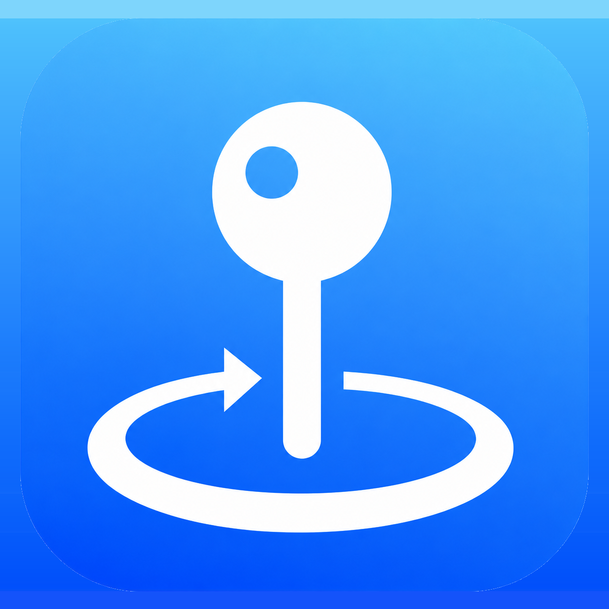
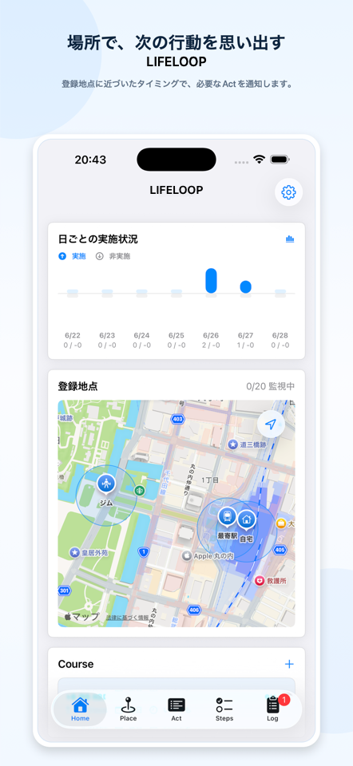
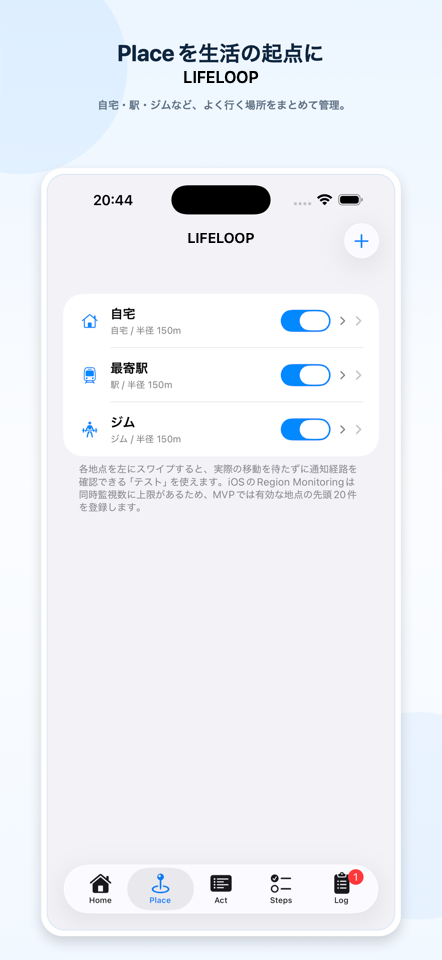
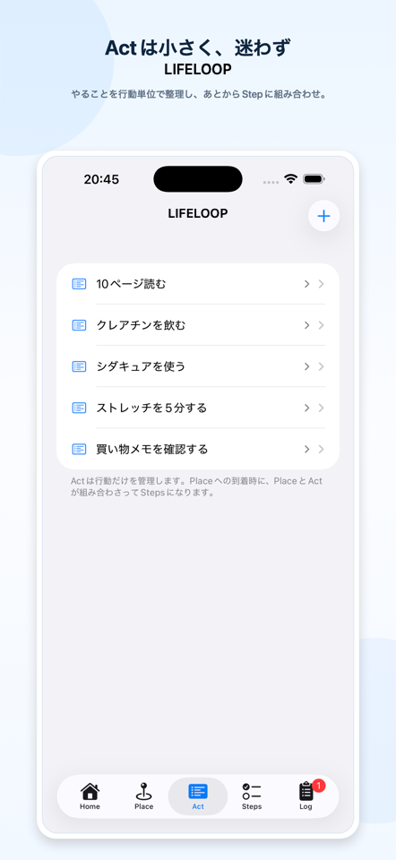
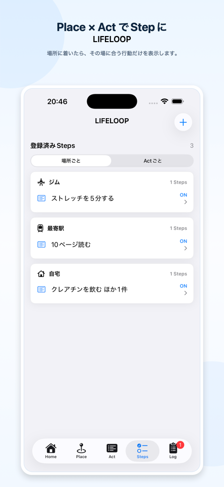
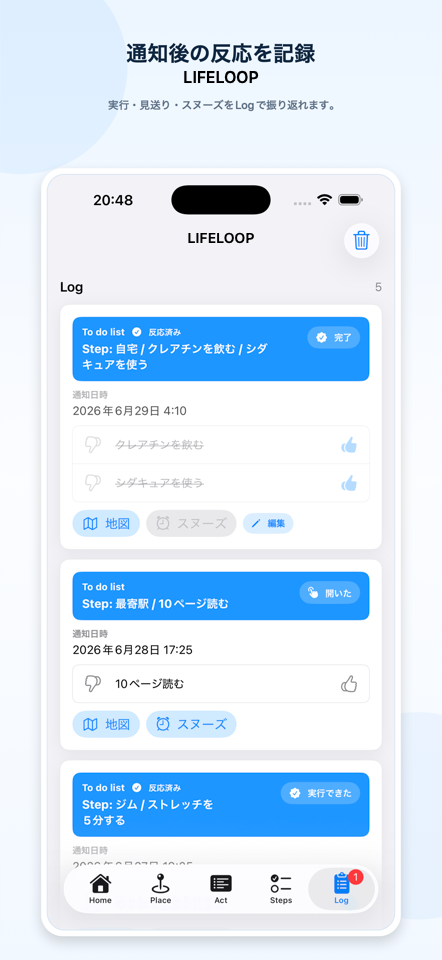

Screenshots
紹介画面サンプル
App Store提出用に作成した実画面ベースのスクリーンショットを、beta紹介ページ用に最適化して掲載しています。





Preview
使い方プレビュー
Place、Act、Step、Courseを登録し、通知で次の行動を思い出すまでの流れを短く紹介します。
Description
アプリ紹介文
LIFELOOPは、場所と行動を組み合わせて、必要なタイミングで小さな習慣を思い出すためのiOSアプリです。
自宅、駅、ジム、職場などのPlaceを登録し、それぞれの場所で取り組みたいActを設定できます。登録地点への到着や離脱をきっかけに、端末内のローカル通知で次の行動を知らせます。
- Place、Act、Course、Stepを組み合わせた習慣通知
- 登録地点への到着・離脱をきっかけにしたローカル通知
- Placeごとの通知テスト
- 通知後のLog記録
- 実施・非実施、スヌーズの記録
- アカウント登録なし
- 独自サーバーへの位置情報・履歴送信なし
LIFELOOPは、医療、服薬、緊急、安全管理など、通知の失敗が重大な結果につながる用途を目的としたアプリではありません。重要な予定や安全に関わる確認は、LIFELOOPだけに依存せず、別の方法でも確認してください。
Information
beta版情報
- アプリ名
- LIFELOOP
- サブタイトル
- 場所で思い出す小さな習慣
- カテゴリ
- ライフスタイル / 仕事効率化
- データ
- 端末内保存、アカウント登録なし
- 提供者
- Knock Knock 株式会社